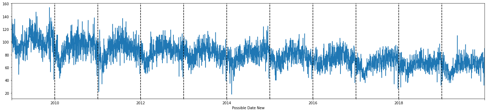
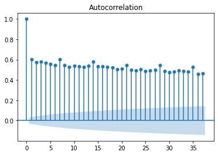
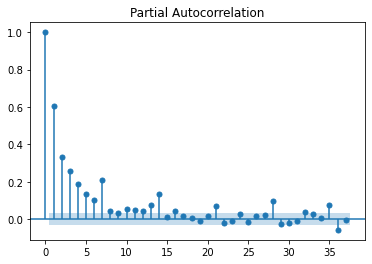
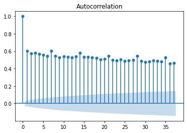
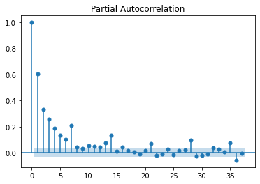
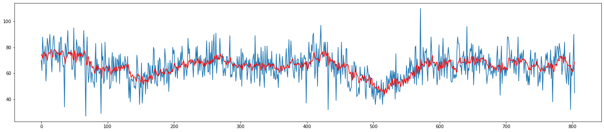
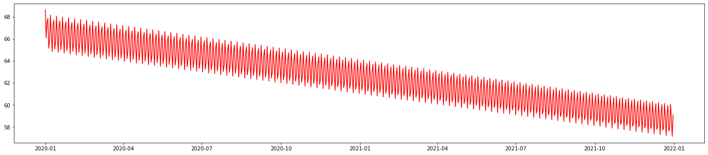

Time series forecasting - ARIMA Model - Summary
Step 1 - Data Preparation
Atlanta crimes data is aggregated and sorted by date ascending, the target varible is the count of 'UCR Literal' per day.
UCR Literal
Possible Date New
2009-01-01 13
2009-01-01 1
2009-01-01 1
2009-01-01 1
2009-01-01 3
Step 2 - Review Data
To review data, and decide if it will be a good candidate for ARIMA model, we have ran the following tests:
- Visulization
- Statistical Test
Visually, we have created time series plot, seasonality decompose plot, and the ACF and PACF plots. Time series plot told us that data has a downward trend in the past between 2009-2019. The downward trend shows more clearly in the seasonality decompose graph. The seasonality decompose graph also indicates there might be seasonality in the data set. The ACF and PACF graph shows us the coefficient among lags.
 



Next, we did Augmented Dickey Fuller Test(ADF Test), to further confirm if the data is stationary or not. As the result below indicated, P-Value is very small, and ADF value is smaller than the critical value, which indicates the data is already stationary, and we can create ARIMA model.
1. ADF : -17.0927913983845
2. P-Value : 7.5703509656698e-30
3. Num of Lags : 64
4. Num of Observations Userd For ADF Regression and Critical Values Calculation : 77192
5. Critical VAlues :
1% : -3.4304347175545535
5% : -2.8615774437099306
10% : -2.5667899299977948
Step 3 - Create/Train the model
Using pmdarima python libarery, we were able to run auto_arima function to select the hyper parameters with the lowest AIC score. The selected parameters are (3,1,3)
Best model: ARIMA(3,1,3)(0,0,0)[0] intercept
Total fit time: 36.345 seconds
Train the model with ARIMA(3,1,3)(0,0,0)[0] took about 2 hours for this dataset
Step 4 - Evaluate the Model
We split data 80/20 for train and test. The graph below shows output of the predicated test data and actual test data.
The graph shows a promising predicated value, however, when we calcuated R squre, it is only 0.20. In addition, we also Calcuated RMSE score, which is about 10, and the mean of the data set is 65. It is not great, but wasn't too much off either. So we decided to go ahead use the model to perform forecast for the next 2 years.
Step 5 - Forecasting
prediction
2020-01-01 68.634197
2020-01-02 66.083242
2020-01-03 67.557436
2020-01-04 67.853603
2020-01-05 65.158929
... ...
2021-12-27 57.870255
2021-12-28 60.070582
2021-12-29 58.840437
2021-12-30 57.161073
2021-12-31 59.110697

What we learn
Beside this model, we have tried different variabion of ARIMA model such as AR, MA, ARIMAX, also attemped to aggregate data to the hourly level, and adding in the zipcode as a variable. For the AR and MA, the results are not usable, for ARIMAX, our computer resource is limited and using colab, it requires Pro. We did try to trim down the data set couple of times, and still were not able to make it work.
Even though the model doesn't work as good as we want it to be, but we certainly leanred the process of creating a machine learning model, model selection, parameter selection, train/test, evaluate the model, at the end, using the model to predict. This is very valuable lesson. In addition, accepting the fact that a good model will take a lot of time to tune, train, and understand, many times we will fail, but eventually we will make something good happen.
Machine learning is a very in depth topic, there are so much to learn and understand in order to make things work the way we want it to, so learning will be a life long journy in the Data Science world.